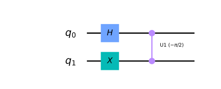

import qiskit.tools.jupyter
%qiskit_version_table
Version Information
| Qiskit Software | Version |
|---|---|
qiskit-terra | 0.22.0 |
qiskit-aer | 0.11.0 |
qiskit-ibmq-provider | 0.19.2 |
qiskit | 0.39.0 |
| System information | |
| Python version | 3.8.13 |
| Python compiler | GCC 7.5.0 |
| Python build | default, Mar 28 2022 11:38:47 |
| OS | Linux |
| CPUs | 24 |
| Memory (Gb) | 62.648441314697266 |
| Thu Oct 20 12:40:19 2022 +03 | |
Hands-on 2¶
Single qubits are interesting, but individually they offer no computational advantage. We will now look at how we represent multiple qubits, and how these qubits can interact with each other. We have seen how we can represent the state of a qubit using a 2D-vector, now we will see how we can represent the state of multiple qubits.
Representing Multi-Qubit States¶
We saw that a single bit has two possible states, and a qubit state has two complex amplitudes. Similarly, two bits have four possible states:
00 01 10 11
And to describe the state of two qubits requires four complex amplitudes. We store these amplitudes in a 4D-vector like so:
The rules of measurement still work in the same way:
And the same implications hold, such as the normalisation condition:
If we have two separated qubits, we can describe their collective state using the kronecker product:
And following the same rules, we can use the kronecker product to describe the collective state of any number of qubits. Here is an example with three qubits:
If we have \(n\) qubits, we will need to keep track of \(2^n\) complex amplitudes. As we can see, these vectors grow exponentially with the number of qubits. This is the reason quantum computers with large numbers of qubits are so difficult to simulate. A modern laptop can easily simulate a general quantum state of around 20 qubits, but simulating 100 qubits is too difficult for the largest supercomputers.
Let’s look at an example circuit:
from qiskit import QuantumCircuit, Aer, assemble
import numpy as np
from qiskit.visualization import plot_histogram, plot_bloch_multivector
qc = QuantumCircuit(3)
# Apply H-gate to each qubit:
for qubit in range(3):
qc.h(qubit)
# See the circuit:
qc.draw('mpl')
---------------------------------------------------------------------------
MissingOptionalLibraryError Traceback (most recent call last)
Input In [3], in <cell line: 6>()
4 qc.h(qubit)
5 # See the circuit:
----> 6 qc.draw('mpl')
File ~/Prog/miniconda3/envs/qml/lib/python3.8/site-packages/qiskit/circuit/quantumcircuit.py:1957, in QuantumCircuit.draw(self, output, scale, filename, style, interactive, plot_barriers, reverse_bits, justify, vertical_compression, idle_wires, with_layout, fold, ax, initial_state, cregbundle, wire_order)
1954 # pylint: disable=cyclic-import
1955 from qiskit.visualization import circuit_drawer
-> 1957 return circuit_drawer(
1958 self,
1959 scale=scale,
1960 filename=filename,
1961 style=style,
1962 output=output,
1963 interactive=interactive,
1964 plot_barriers=plot_barriers,
1965 reverse_bits=reverse_bits,
1966 justify=justify,
1967 vertical_compression=vertical_compression,
1968 idle_wires=idle_wires,
1969 with_layout=with_layout,
1970 fold=fold,
1971 ax=ax,
1972 initial_state=initial_state,
1973 cregbundle=cregbundle,
1974 wire_order=wire_order,
1975 )
File ~/Prog/miniconda3/envs/qml/lib/python3.8/site-packages/qiskit/visualization/circuit/circuit_visualization.py:263, in circuit_drawer(circuit, scale, filename, style, output, interactive, plot_barriers, reverse_bits, justify, vertical_compression, idle_wires, with_layout, fold, ax, initial_state, cregbundle, wire_order)
248 return _generate_latex_source(
249 circuit,
250 filename=filename,
(...)
260 wire_order=wire_order,
261 )
262 elif output == "mpl":
--> 263 image = _matplotlib_circuit_drawer(
264 circuit,
265 scale=scale,
266 filename=filename,
267 style=style,
268 plot_barriers=plot_barriers,
269 reverse_bits=reverse_bits,
270 justify=justify,
271 idle_wires=idle_wires,
272 with_layout=with_layout,
273 fold=fold,
274 ax=ax,
275 initial_state=initial_state,
276 cregbundle=cregbundle,
277 wire_order=wire_order,
278 )
279 else:
280 raise VisualizationError(
281 "Invalid output type %s selected. The only valid choices "
282 "are text, latex, latex_source, and mpl" % output
283 )
File ~/Prog/miniconda3/envs/qml/lib/python3.8/site-packages/qiskit/visualization/circuit/circuit_visualization.py:643, in _matplotlib_circuit_drawer(circuit, scale, filename, style, plot_barriers, reverse_bits, justify, idle_wires, with_layout, fold, ax, initial_state, cregbundle, wire_order)
640 if fold is None:
641 fold = 25
--> 643 qcd = _matplotlib.MatplotlibDrawer(
644 qubits,
645 clbits,
646 nodes,
647 scale=scale,
648 style=style,
649 reverse_bits=reverse_bits,
650 plot_barriers=plot_barriers,
651 layout=None,
652 fold=fold,
653 ax=ax,
654 initial_state=initial_state,
655 cregbundle=cregbundle if cregbundle is not None else True,
656 global_phase=None,
657 calibrations=None,
658 qregs=None,
659 cregs=None,
660 with_layout=with_layout,
661 circuit=circuit,
662 )
663 return qcd.draw(filename)
File ~/Prog/miniconda3/envs/qml/lib/python3.8/site-packages/qiskit/utils/classtools.py:117, in _WrappedMethod.__get__.<locals>.out(*args, **kwargs)
115 for callback in self._before:
116 callback.__get__(obj, objtype)(*args, **kwargs)
--> 117 retval = method(*args, **kwargs)
118 for callback in self._after:
119 callback.__get__(obj, objtype)(*args, **kwargs)
File ~/Prog/miniconda3/envs/qml/lib/python3.8/site-packages/qiskit/utils/classtools.py:116, in _WrappedMethod.__get__.<locals>.out(*args, **kwargs)
113 @functools.wraps(method)
114 def out(*args, **kwargs):
115 for callback in self._before:
--> 116 callback.__get__(obj, objtype)(*args, **kwargs)
117 retval = method(*args, **kwargs)
118 for callback in self._after:
File ~/Prog/miniconda3/envs/qml/lib/python3.8/site-packages/qiskit/utils/lazy_tester.py:39, in _RequireNow.__call__(self, *_args, **_kwargs)
38 def __call__(self, *_args, **_kwargs):
---> 39 self._tester.require_now(self._feature)
File ~/Prog/miniconda3/envs/qml/lib/python3.8/site-packages/qiskit/utils/lazy_tester.py:223, in LazyDependencyManager.require_now(self, feature)
221 if self:
222 return
--> 223 raise MissingOptionalLibraryError(
224 libname=self._name, name=feature, pip_install=self._install, msg=self._msg
225 )
MissingOptionalLibraryError: "The 'pylatexenc' library is required to use 'MatplotlibDrawer'. You can install it with 'pip install pylatexenc'."
Each qubit is in the state \(|+\rangle\), so we should see the vector:
# Let's see the result
svsim = Aer.get_backend('aer_simulator')
qc.save_statevector()
qobj = assemble(qc)
final_state = svsim.run(qobj).result().get_statevector()
# In Jupyter Notebooks we can display this nicely using Latex.
# If not using Jupyter Notebooks you may need to remove the
# array_to_latex function and use print(final_state) instead.
from qiskit.visualization import array_to_latex
array_to_latex(final_state, prefix="\\text{Statevector} = ")
And we have our expected result.
Single Qubit Gates on Multi-Qubit Statevectors¶
We have seen that an X-gate is represented by the matrix:
And that it acts on the state \(|0\rangle\) as so:
but it may not be clear how an X-gate would act on a qubit in a multi-qubit vector. Fortunately, the rule is quite simple; just as we used the kronecker product to calculate multi-qubit statevectors, we use the tensor product to calculate matrices that act on these statevectors. For example, in the circuit below:
qc = QuantumCircuit(2)
qc.h(0)
qc.x(1)
qc.draw('mpl')
we can represent the simultaneous operations (H & X) using their kronecker product:
The operation looks like this:
Which we can then apply to our 4D statevector \(|q_1 q_0\rangle\). This can become quite messy, you will often see the clearer notation:
Instead of calculating this by hand, we can use Qiskit’s aer_simulator to calculate this for us. The Aer simulator multiplies all the gates in our circuit together to compile a single unitary matrix that performs the whole quantum circuit:
usim = Aer.get_backend('aer_simulator')
qc.save_unitary()
qobj = assemble(qc)
unitary = usim.run(qobj).result().get_unitary()
and view the results:
# In Jupyter Notebooks we can display this nicely using Latex.
# If not using Jupyter Notebooks you may need to remove the
# array_to_latex function and use print(unitary) instead.
from qiskit.visualization import array_to_latex
array_to_latex(unitary, prefix="\\text{Circuit = }\n")
If we want to apply a gate to only one qubit at a time (such as in the circuit below), we describe this using kronecker product with the identity matrix, e.g.:
qc = QuantumCircuit(2)
qc.x(1)
qc.draw('mpl')

# Simulate the unitary
usim = Aer.get_backend('aer_simulator')
qc.save_unitary()
qobj = assemble(qc)
unitary = usim.run(qobj).result().get_unitary()
# Display the results:
array_to_latex(unitary, prefix="\\text{Circuit = } ")
We can see Qiskit has performed the kronecker product: $$ X \otimes I =
$$
Send it after class 1¶
Calculate the single qubit unitary (\(U\)) created by the sequence of gates: \(U = XZH\). Use Qiskit’s Aer simulator to check your results.
Note: Different books, softwares and websites order their qubits differently. This means the kronecker product of the same circuit can look very different. Try to bear this in mind when consulting other sources.
Multi-Qubit Gates¶
Now we know how to represent the state of multiple qubits, we are now ready to learn how qubits interact with each other. An important two-qubit gate is the CNOT-gate.
The CNOT-Gate¶
CNOT gate is a conditional gate that performs an X-gate on the second qubit (target), if the state of the first qubit (control) is \(|1\rangle\). The gate is drawn on a circuit like this, with q0 as the control and q1 as the target:
qc = QuantumCircuit(2)
# Apply CNOT
qc.cx(0,1)
# See the circuit:
qc.draw('mpl')

When our qubits are not in superposition of \(|0\rangle\) or \(|1\rangle\) (behaving as classical bits), this gate is very simple and intuitive to understand. We can use the classical truth table:
Input (t,c) |
Output (t,c) |
|---|---|
00 |
00 |
01 |
11 |
10 |
10 |
11 |
01 |
And acting on our 4D-statevector, it has one of the two matrices:
depending on which qubit is the control and which is the target. Different books, simulators and papers order their qubits differently. In our case, the left matrix corresponds to the CNOT in the circuit above. This matrix swaps the amplitudes of \(|01\rangle\) and \(|11\rangle\) in our statevector:
We have seen how this acts on classical states, but let’s now see how it acts on a qubit in superposition. We will put one qubit in the state \(|+\rangle\):
qc = QuantumCircuit(2)
# Apply H-gate to the first:
qc.h(0)
qc.draw('mpl')

# Let's see the result:
svsim = Aer.get_backend('aer_simulator')
qc.save_statevector()
qobj = assemble(qc)
final_state = svsim.run(qobj).result().get_statevector()
# Print the statevector neatly:
array_to_latex(final_state, prefix="\\text{Statevector = }")
As expected, this produces the state \(|0\rangle \otimes |{+}\rangle = |0{+}\rangle\):
And let’s see what happens when we apply the CNOT gate:
qc = QuantumCircuit(2)
# Apply H-gate to the first:
qc.h(0)
# Apply a CNOT:
qc.cx(0,1)
qc.draw('mpl')

# Let's get the result:
qc.save_statevector()
qobj = assemble(qc)
result = svsim.run(qobj).result()
# Print the statevector neatly:
final_state = result.get_statevector()
array_to_latex(final_state, prefix="\\text{Statevector = }")
We see we have the state:
This state is very interesting to us, because it is entangled. This leads us neatly on to the next section.
Entangled States¶
We saw in the previous section we could create the state:
This is known as a Bell state. We can see that this state has 50% probability of being measured in the state \(|00\rangle\), and 50% chance of being measured in the state \(|11\rangle\). Most interestingly, it has a 0% chance of being measured in the states \(|01\rangle\) or \(|10\rangle\). We can see this in Qiskit:
plot_histogram(result.get_counts())
This combined state cannot be written as two separate qubit states, which has interesting implications. Although our qubits are in superposition, measuring one will tell us the state of the other and collapse its superposition. For example, if we measured the top qubit and got the state \(|1\rangle\), the collective state of our qubits changes like so:
Even if we separated these qubits light-years away, measuring one qubit collapses the superposition and appears to have an immediate effect on the other. This is the ‘spooky action at a distance’ that upset so many physicists in the early 20th century.
It’s important to note that the measurement result is random, and the measurement statistics of one qubit are not affected by any operation on the other qubit. Because of this, there is no way to use shared quantum states to communicate. This is known as the no-communication theorem.
Visualizing Entangled States¶
We have seen that this state cannot be written as two separate qubit states, this also means we lose information when we try to plot our state on separate Bloch spheres:
plot_bloch_multivector(final_state)

Given how we defined the Bloch sphere in the earlier chapters, it may not be clear how Qiskit even calculates the Bloch vectors with entangled qubits like this. In the single-qubit case, the position of the Bloch vector along an axis nicely corresponds to the expectation value of measuring in that basis. If we take this as the rule of plotting Bloch vectors, we arrive at this conclusion above. This shows us there is no single-qubit measurement basis for which a specific measurement is guaranteed. This contrasts with our single qubit states, in which we could always pick a single-qubit basis. Looking at the individual qubits in this way, we miss the important effect of correlation between the qubits. We cannot distinguish between different entangled states. For example, the two states:
will both look the same on these separate Bloch spheres, despite being very different states with different measurement outcomes.
How else could we visualize this statevector? This statevector is simply a collection of four amplitudes (complex numbers), and there are endless ways we can map this to an image. One such visualization is the Q-sphere, here each amplitude is represented by a blob on the surface of a sphere. The size of the blob is proportional to the magnitude of the amplitude, and the colour is proportional to the phase of the amplitude. The amplitudes for \(|00\rangle\) and \(|11\rangle\) are equal, and all other amplitudes are 0:
from qiskit.visualization import plot_state_qsphere
plot_state_qsphere(final_state)
Here we can clearly see the correlation between the qubits. The Q-sphere’s shape has no significance, it is simply a nice way of arranging our blobs; the number of 0s in the state is proportional to the states position on the Z-axis, so here we can see the amplitude of \(|00\rangle\) is at the top pole of the sphere, and the amplitude of \(|11\rangle\) is at the bottom pole of the sphere.
Send it after class 2¶
Create a quantum circuit that produces the Bell state: \(\tfrac{1}{\sqrt{2}}(|01\rangle + |10\rangle)\). Use the statevector simulator to verify your result.
The circuit you created in question 1 transforms the state \(|00\rangle\) to \(\tfrac{1}{\sqrt{2}}(|01\rangle + |10\rangle)\), calculate the unitary of this circuit using Qiskit’s simulator. Verify this unitary does in fact perform the correct transformation.
Exploring the CNOT-Gate¶
We saw that we could entangle the two qubits by placing the control qubit in the state \(|+\rangle\):
But what happens if we put the second qubit in superposition?
from qiskit import QuantumCircuit, Aer, assemble
from math import pi
import numpy as np
from qiskit.visualization import plot_bloch_multivector, plot_histogram, array_to_latex
qc = QuantumCircuit(2)
qc.h(0)
qc.h(1)
qc.cx(0,1)
qc.draw('mpl')
In the circuit above, we have the CNOT acting on the state:
Since the CNOT swaps the amplitudes of \(|01\rangle\) and \(|11\rangle\), we see no change:
qc = QuantumCircuit(2)
qc.h(0)
qc.h(1)
qc.cx(0,1)
display(qc.draw('mpl')) # `display` is a command for Jupyter notebooks
# similar to `print`, but for rich content
# Let's see the result
svsim = Aer.get_backend('aer_simulator')
qc.save_statevector()
qobj = assemble(qc)
final_state = svsim.run(qobj).result().get_statevector()
display(array_to_latex(final_state, prefix="\\text{Statevector} = "))
plot_bloch_multivector(final_state)

Let’s put the target qubit in the state \(|-\rangle\), so it has a negative phase:
qc = QuantumCircuit(2)
qc.h(0)
qc.x(1)
qc.h(1)
qc.draw('mpl')
This creates the state:
qc = QuantumCircuit(2)
qc.h(0)
qc.x(1)
qc.h(1)
display(qc.draw('mpl'))
# See the result
qc1 = qc.copy()
qc1.save_statevector()
final_state = svsim.run(qc1).result().get_statevector()
display(array_to_latex(final_state, prefix="\\text{Statevector} = "))
plot_bloch_multivector(final_state)

If the CNOT acts on this state, we will swap the amplitudes of \(|01\rangle\) and \(|11\rangle\), resulting in the state:
This is interesting, because it affects the state of the control qubit while leaving the state of the target qubit unchanged.
qc.cx(0,1)
display(qc.draw('mpl'))
qc.save_statevector()
qobj = assemble(qc)
final_state = svsim.run(qobj).result().get_statevector()
display(array_to_latex(final_state, prefix="\\text{Statevector} = "))
plot_bloch_multivector(final_state)

If you remember the H-gate transforms \(|{+}\rangle \rightarrow |0\rangle\) and \(|{-}\rangle \rightarrow |1\rangle\), we can see that wrapping a CNOT in H-gates has the equivalent behaviour of a CNOT acting in the opposite direction:
We can verify this using Qiskit’s Aer simulator:
qc = QuantumCircuit(2)
qc.h(0)
qc.h(1)
qc.cx(0,1)
qc.h(0)
qc.h(1)
display(qc.draw('mpl'))
qc.save_unitary()
usim = Aer.get_backend('aer_simulator')
qobj = assemble(qc)
unitary = usim.run(qobj).result().get_unitary()
array_to_latex(unitary, prefix="\\text{Circuit = }\n")

qc = QuantumCircuit(2)
qc.cx(1,0)
display(qc.draw('mpl'))
qc.save_unitary()
qobj = assemble(qc)
unitary = usim.run(qobj).result().get_unitary()
array_to_latex(unitary, prefix="\\text{Circuit = }\n")
This identity is an example of phase kickback, which leads us neatly on to the next section…
Phase Kickback¶
Explaining the CNOT Circuit Identity¶
In the previous section we saw this identity:
This is an example of kickback (or, phase kickback ) which is very important and is used in almost every quantum algorithm. Kickback is where the eigenvalue added by a gate to a qubit is ‘kicked back’ into a different qubit via a controlled operation. For example, we saw that performing an X-gate on a \(|{-}\rangle\) qubit gives it the phase \(-1\):
When our control qubit is in either \(|0\rangle\) or \(|1\rangle\), this phase affects the whole state, however it is a global phase and has no observable effects:
The interesting effect is when our control qubit is in superposition. The component of the control qubit that lies in the direction of \(|1\rangle\) applies this phase factor to the corresponding target qubit. This applied phase factor in turn introduces a relative phase into the control qubit:
This can then be written as the two separable qubit states:
Wrapping the CNOT in H-gates transforms the qubits from the computational basis to the \((|+\rangle, |-\rangle)\) basis, where we see this effect. This identity is very useful in hardware, since some hardwares only allow for CNOTs in one direction between two specific qubits. We can use this identity to overcome this problem and allow CNOTs in both directions.
Kickback with the T-gate ¶
Let’s look at another controlled operation, the controlled-T gate:
qc = QuantumCircuit(2)
qc.cp(pi/4, 0, 1)
qc.draw('mpl')

The T-gate has the matrix:
And the controlled-T gate has the matrix:
We can verify this using Qiskit’s Aer simulator:
qc = QuantumCircuit(2)
qc.cp(pi/4, 0, 1)
display(qc.draw('mpl'))
# See Results:
qc.save_unitary()
qobj = assemble(qc)
unitary = usim.run(qobj).result().get_unitary()
array_to_latex(unitary, prefix="\\text{Controlled-T} = \n")
More generally, we can find the matrix of any controlled-U operation using the rule:
Qiskit puts the most significant bit (MSB) on the left, and the least significant bit (LSB) on the right. This is the standard ordering of binary bitstrings. We order the qubits in the same way (qubit representing the MSB has index 0), which is why Qiskit uses a non-standard tensor product order. Hence, in Qiskit, the above matrix looks like the following:
If we apply the T-gate to a qubit in the state \(|1\rangle\), we add a phase of \(e^{i\pi/4}\) to this qubit:
This is global phase and is unobservable. But if we control this operation using another qubit in the \(|{+}\rangle\) state, the phase is no longer global but relative, which changes the relative phase in our control qubit:
This has the effect of rotating our control qubit around the Z-axis of the Bloch sphere, while leaving the target qubit unchanged. Let’s see this in Qiskit:
qc = QuantumCircuit(2)
qc.h(0)
qc.x(1)
display(qc.draw('mpl'))
# See Results:
qc.save_statevector()
qobj = assemble(qc)
final_state = svsim.run(qobj).result().get_statevector()
plot_bloch_multivector(final_state)

qc = QuantumCircuit(2)
qc.h(0)
qc.x(1)
# Add Controlled-T
qc.cp(pi/4, 0, 1)
display(qc.draw('mpl'))
# See Results:
qc.save_statevector()
qobj = assemble(qc)
final_state = svsim.run(qobj).result().get_statevector()
plot_bloch_multivector(final_state)
we can see the leftmost qubit has been rotated by \(\pi/4\) around the Z-axis of the Bloch sphere as expected. After exploring this behaviour, it may become clear why Qiskit draws the controlled-Z rotation gates in this symmetrical fashion (two controls instead of a control and a target). There is no clear control or target qubit for all cases.

Send it after class 3:¶
-What would be the resulting state of the control qubit (q0) if the target qubit (q1) was in the state \(|0\rangle\)? (as shown in the circuit below)? Use Qiskit to check your answer.

-What would happen to the control qubit (q0) if the target qubit (q1) was in the state \(|1\rangle\), and the circuit used a controlled-Sdg gate instead of the controlled-T (as shown in the circuit below)?

-What would happen to the control qubit (q0) if it was in the state \(|1\rangle\) instead of the state \(|{+}\rangle\) before application of the controlled-T (as shown in the circuit below)?